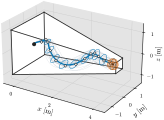
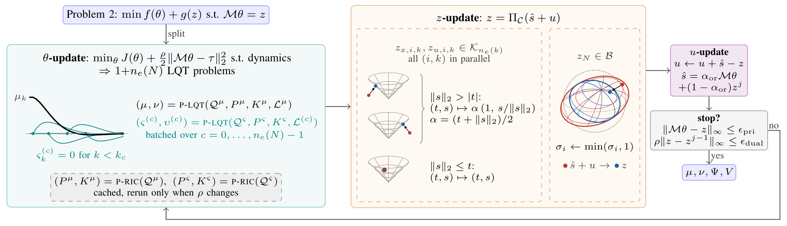
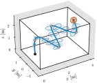
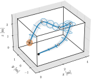
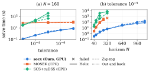

Daniel Guggenheim School of Aerospace Engineering · Georgia Tech

socx.In this article, we present socx, a GPU-accelerated solver for lifted convex reformulations of linear stochastic optimal control under chance constraints, implemented in JAX. We demonstrate that by exploiting the sparse and independent structure of the problem, distributed optimization can reduce it to simpler problems: independent linear-quadratic tracking (LQT) problems and Euclidean projections onto sets. These simpler problems can be solved in parallel and then coupled using the constraints. To validate our solver, we run it on a hover-linearized 3D quadrotor and show a speed-up of up to 98× over MOSEK and up to 2224× over SCS. socx also solves horizons up to \(N=1120\), whereas MOSEK runs out of memory at \(N=320\). We present ablations to isolate the key components that enable the speed-up.
Under uncertainty, a planner has to find a distribution over paths whose probability of failure is bounded, rather than a single path. We consider a discrete-time linear system driven by Gaussian noise, with chance constraints on the state and control and a bound on the terminal covariance:
\[ \mathbf{x}_{k+1} = A_k \mathbf{x}_k + B_k \mathbf{u}_k + D_k \mathbf{w}_k, \qquad \mathbf{w}_k \sim \mathcal{N}(0, I_{n_w}) \] \[ \Pr\big(a_{i,k}^\top \mathbf{x}_k \le b_{i,k}\big) \ge 1 - \epsilon_{x,i,k}, \qquad \mathrm{Var}(\mathbf{x}_N) \preceq \Sigma_f \]Writing the state and control in a growing basis of the initial state and past noise gives a deterministic convex problem, an exact reformulation for these constraints established in our earlier work (arXiv ↗, IEEE ↗). Each linear chance constraint becomes a second-order cone:
\[ \mathbf{x}_k = \mu_k + \Psi_k \mathbf{e}^{(k)}, \qquad \mathbf{u}_k = \nu_k + V_k \mathbf{e}^{(k)}, \qquad a_{i,k}^\top \mu_k + \zeta_{x,i,k} \big\| \Psi_k^\top a_{i,k} \big\|_2 \le b_{i,k} \]The cost is size: the basis has \(n_e(k) = n_x + k\,n_w\) elements, so the number of variables grows as \(O(N^2 n_w (n_u + n_x))\). Generic conic solvers become prohibitively expensive as the horizon grows.
Dynamics and cost separate across the mean and each stochastic column; only the constraints couple them. socx uses ADMM with a variable split that turns each iteration into small subproblems solved in parallel, with no Jacobians, KKT matrices, or dense constraint operators.

One mean and \(n_e(N)\) stochastic tracking problems run in parallel with \(O(\log N)\) span. The stochastic columns share one set of cached gains.
Chance constraints project onto cones in closed form. The terminal covariance uses a small \(n_x \times n_x\) Gram eigendecomposition.
The dual accumulates the remaining constraint residual. The solver stops when the primal and dual tests pass, and otherwise loops back to the θ-update.
The system has \(n_x=12\), \(n_u=4\), and \(n_w=6\), with random wrench perturbations and \(\Delta t = 0.1\) s. Each setup has position chance constraints (\(\epsilon_x = 0.05\)), actuator limits (\(\epsilon_u = 0.05\)), and a terminal position covariance bound of \(\Sigma_f = (0.12\,\mathrm{m})^2 I_3\).

Zig-zag climb through a room
Out and back through a roomsocx at \(N=80\).| socx (ours), GPU | MOSEK, CPU | SCS + cuDSS, GPU | |||||||
|---|---|---|---|---|---|---|---|---|---|
| \(N\) | \(n_e(N)\) | Time (s) | Iterations | Obj. err. | \(P_\mathrm{viol}/\epsilon\) | Time (s) | Speed-up | Time (s) | Speed-up |
| 40 | 252 | 0.38 ± 0.02 | 377 ± 20 | 2×10−7 | 1.000 | 2.9 ± 0.1 | 7.2–7.9× | 26 ± 11 | 47–104× |
| 80 | 492 | 0.66 ± 0.06 | 483 ± 53 | 10−7 | 1.000 | 14.9 ± 1.5 | 20–27× | 179 ± 79 | 145–369× |
| 160 | 972 | 2.20 ± 0.38 | 750 ± 135 | 2×10−5 | 1.002 | 91.7 ± 5.5 | 37–53× | 1976 ± 2077 | 199–2224× |
| 240 | 1,452 | 4.33 ± 0.30 | 798 ± 57 | 10−4 | 1.002 | 311.7 ± 82.9 | 57–98× | 3848 ± 2123 | 386–1342× |
| 320 | 1,932 | 7.10 ± 0.26 | 808 ± 31 | – | 1.000 | out of memory (50 GB cap) | 5789 ± 1633 | 576–1085× | |
| 1120 | 6,732 | 144.54 ± 55.48 | 1364 ± 523 | – | – | out of memory (50 GB cap) | time out (10,000 s cap) | ||
Values are the mean ± maximum deviation over the three setups. \(P_\mathrm{viol}/\epsilon\) is the probability of violation divided by the allowed violation: a value near 1 means the constraints are active, and a value above 1 quantifies the violation. Runs used an Intel Core Ultra 9 285K (64 GB RAM) and an RTX 5080 (16 GB VRAM). Baseline times are the solvers' internal solve times through CVXPY, and socx times exclude JAX's just-in-time compilation.

As a first-order method, socx slows at tighter tolerances, while MOSEK, an interior-point method, varies little. At \(N=160\), the speed-up over MOSEK falls from 37–53× at \(10^{-5}\) to 12–14× at \(10^{-7}\).
On the helix setup at tolerance \(10^{-5}\), we swap out each key component. The parallel LQT update is faster than every alternative, though sequential and condensed updates use less memory. Sharing gains matters most: without it, the update is 6.9–14.8× slower and uses 4.8–9.7× more memory.
| Time (ms) | Scratch memory (MB) | |||||
|---|---|---|---|---|---|---|
| Variant | \(N=80\) | \(N=160\) | \(N=320\) | \(N=80\) | \(N=160\) | \(N=320\) |
| θ-update, per iteration | ||||||
| Parallel LQT (ours) | 1.13 | 2.62 | 8.17 | 39 | 124 | 390 |
| Sequential LQT | 4.48 | 9.16 | 20.66 | 8 | 40 | 159 |
| Condensed KKT | 2.46 | 9.54 | 61.19 | 10 | 13 | 43 |
| Per-column loop | 7.78 | 30.63 | 120.72 | 188 | 747 | 3768 |
| Time (ms) | ||||
|---|---|---|---|---|
| Variant | \(N=80\) | \(N=160\) | \(N=320\) | Complexity |
| Terminal-LMI projection, per call | ||||
| Gram eigendecomposition (ours) | 0.39 | 0.42 | 0.41 | \(O(n_x^2 W + n_x^3)\) |
| SVD | 0.94 | 1.05 | 0.98 | \(O(n_x^2 W)\) |
| Schur-complement PSD | 8.79 | 22.03 | 88.64 | \(O((n_x + W)^3)\) |
Here \(W = n_e(N)\).
@misc{dokania2026socx,
title = {socx: GPU-Accelerated Chance-Constrained Stochastic Optimal Control using JAX},
author = {Dokania, Tanmay and Nakka, Yashwanth Kumar},
year = {2026},
eprint = {2610.40427},
archivePrefix = {arXiv},
primaryClass = {eess.SY}
}